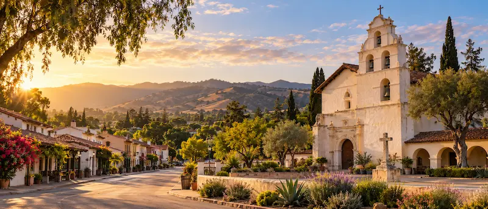

San Juan Bautista is a small town in San Benito County, California. It is home to Mission San Juan Bautista, which was founded in 1797. It is the largest of the California missions.
The town also has a state historic park with old buildings from the 1800s, like the Plaza Hotel and the Castro-Breen Adobe.
You can walk around the plaza, visit the mission, and see the old stables. The town is right on the San Andreas Fault, and you can see a fault line marker near the mission.
Third Street has lots of small restaurants and shops. It is a nice place to get lunch after walking around.